Itda logo, round 3
After the references: caret and ghost text done properly (1), the Tab key (2), plus playful hand-drawn and Cursor-simple takes, in the app's new look. John: "you can go ahead with 1 and 2, but maybe a few more in the playful, hand-drawn/hand-written style of granola or the simple style of cursor; also, i have another thread that's updating the main look of the app screen, so it should go well with that too"
Where we are: the app's new look
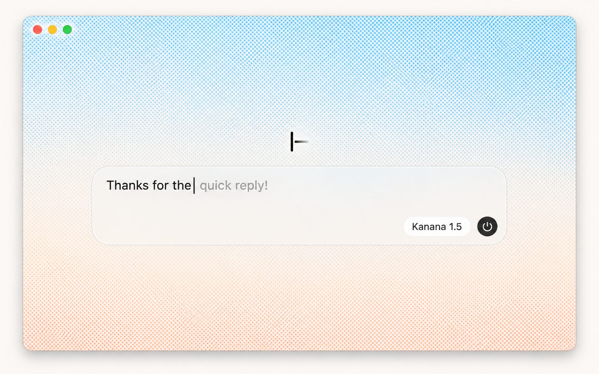
From the window thread (dither-look option I): a halftone sky from powder blue to peach, white frosted glass, near-black text, grey ghost text. Round 3 uses these colours.
Drawn options (vector, ready to build)
3ACaret, halftone suggestion
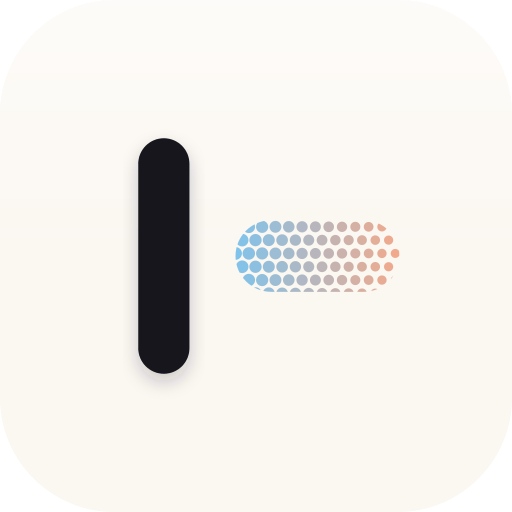
Round 1's idea on a glossy paper tile: a near-black caret and the suggestion printed as blue-to-peach halftone, the window's sky in one bar. Balanced, and the dots blur into a soft gradient at 32 px.
3BThe window in miniature
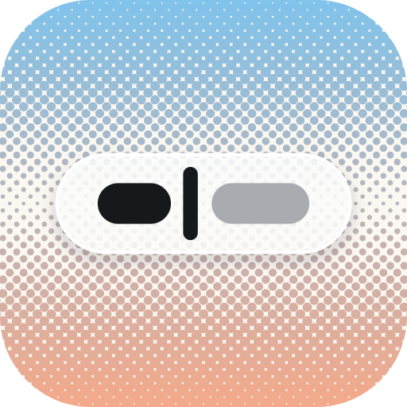
The halftone sky, a frosted field, typed text, the caret and a grey ghost word: the app's own screen as its icon. Ties best to the window; busiest at 16 px.
3CTab key with the suggestion on it
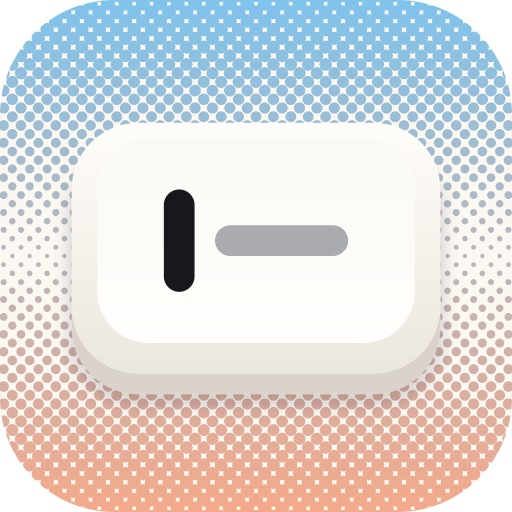
A cream keycap on the sky, labelled with a caret and the ghost after it: the key that takes a suggestion. No other icon in the references uses a key. The vector version of 3I.
3DCursor-simple, black
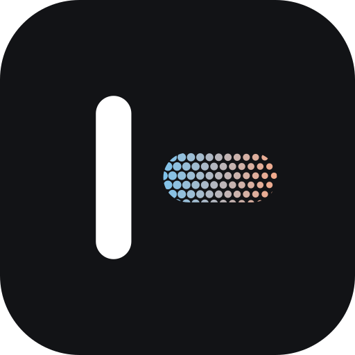
The same mark as 3A on a black tile, with the halftone suggestion glowing against it. Strongest in a dark Dock, and the plainest.
3EHand-drawn
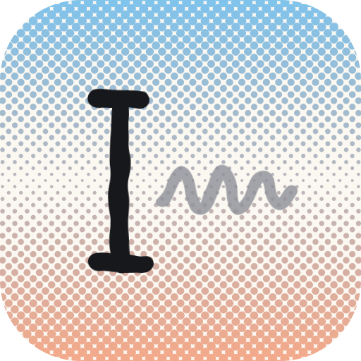
A wobbly marker I-beam and a pencil scribble of words not yet written, on the sky. The playful direction; the I-beam reads as a capital I.
Image ideas (Codex's image tool, the app look as reference)
Images, not builds: each note says what's worth taking into a drawn version.
3FGlossy paper tile
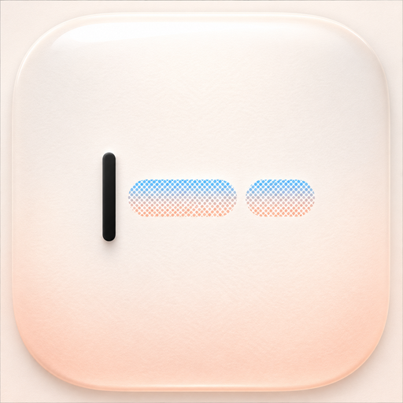
iA Writer's lesson: a soft pearly tile, the caret, two halftone ghost words. The finish is what 3A should borrow; the image already has its own tile shape, so it looks inset here.
3GFrosted field on the sky
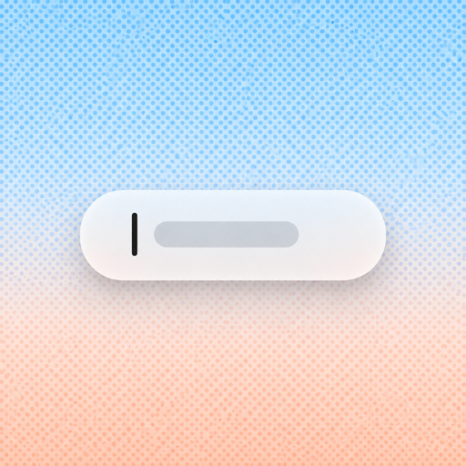
Like 3B, but the field is too small to read below 64 px.
3HTab keycap, ⇥
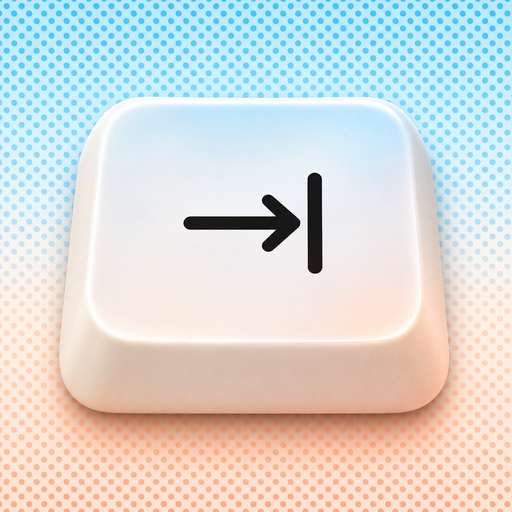
A chunky, glossy Tab key with the tab arrow on the sky. Instantly says "press Tab", and it's the most finished icon of the round. Generic on its own: any keyboard app could use it.
3ITab keycap, caret and ghost
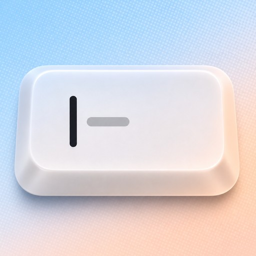
The same key labelled with a caret and grey ghost text: "Tab takes the suggestion" in one object, in the window's colours. My pick.
3JHandwriting
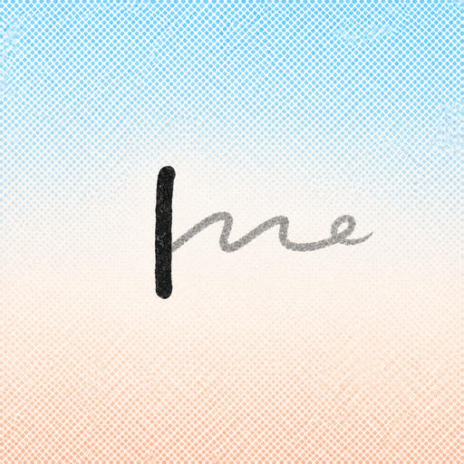
A pen line running into grey cursive. Charming, but thin and small at Dock size.
3K잇, brush-written
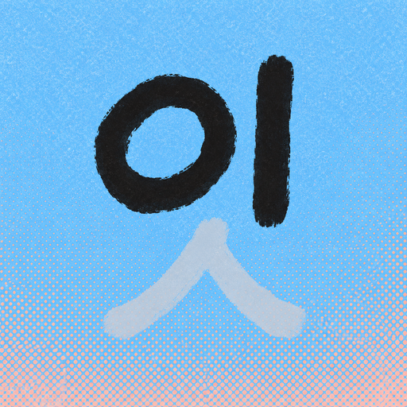
Correct Hangul: ㅇ and ㅣ in black ink, ㅅ pale like ghost text. The most personal and the most Korean; to others it's a lettering mark. At 16 px the pale ㅅ vanishes and it reads 이.
3LCursor-simple, isometric
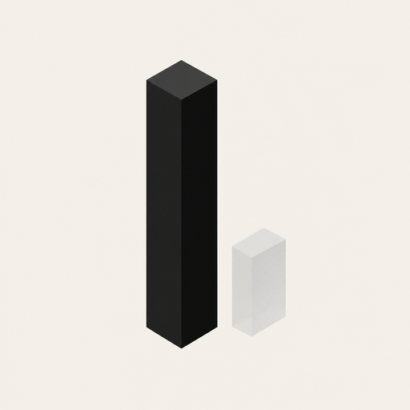
A black prism and a pale ghost block, Cursor-like. Clean, but it reads as a bar chart.
3MHalftone on black
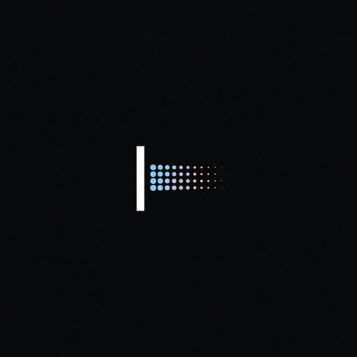
Like 3D, but tiny in the tile. 3D is the cleaner version.